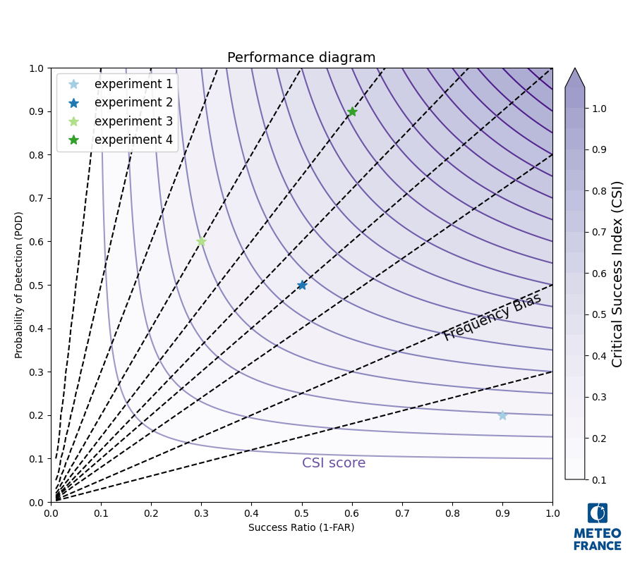
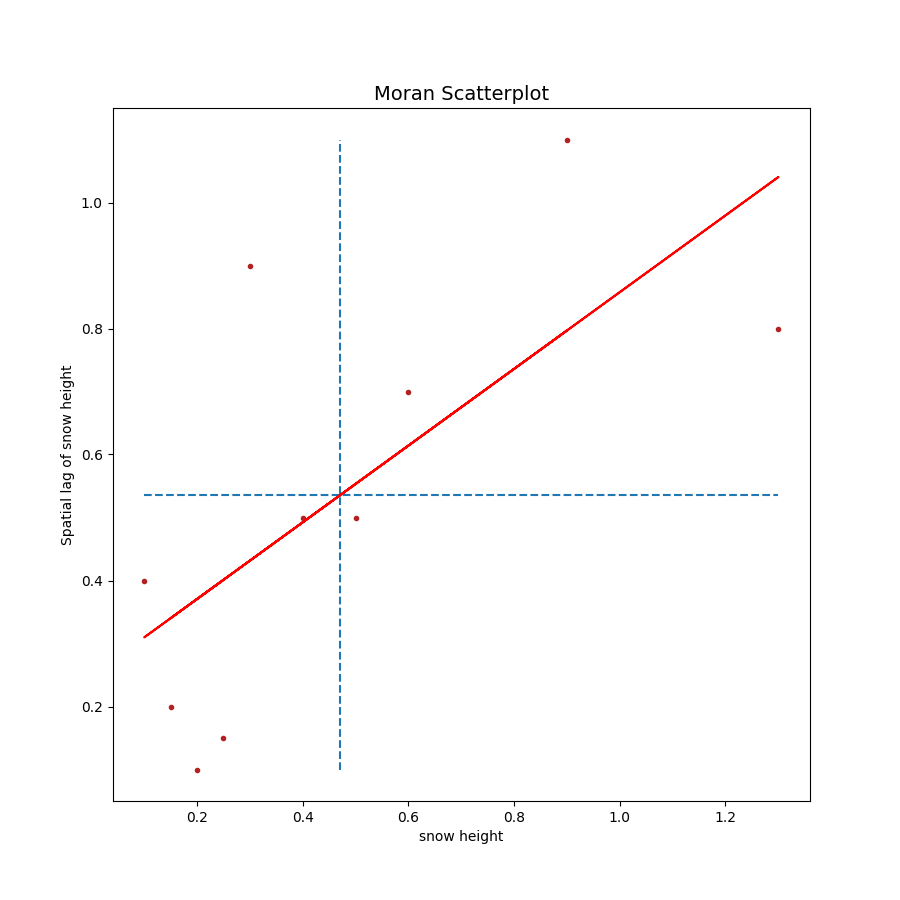

Score plotting tools¶
Created on 24 April 2024
@author: radanovics
based on code from Ange Haddjeri thesis.
- class plots.scores.perfdiag.PerfDiag(figsize=(9, 8), csi_cmap='Purples', title='Performance diagram')[source]¶
Bases:
MplfigurePerformance diagram Plot 1-FAR on x-axis, POD on y-axis and iso-lines for frequency bias and CSI
Example:
import matplotlib.pyplot as plt from snowtools.plots.scores.perfdiag import PerfDiag diag = PerfDiag() diag.plot_scores([0.2, 0.5, 0.6, 0.9], [0.1, 0.5, 0.7, 0.4]) diag.add_legend() diag.addlogo() plt.show() diag.close()

- Parameters:
figsize – figure size
csi_cmap – colormap for CSI shading. Will be truncated
title – Figure title
- __init__(figsize=(9, 8), csi_cmap='Purples', title='Performance diagram')[source]¶
- Parameters:
figsize – figure size
csi_cmap – colormap for CSI shading. Will be truncated
title – Figure title
- add_datapoint(pod, far, marker='*', color='#6ACC64', label=None, linestyle='None', markersize=10)[source]¶
- Parameters:
pod – Probability of detection
far – False Alarm Ratio
marker – matplotlib marker type
color – matplotlib compatible color specification
label – experiment label for the legend
linestyle – matplotlib linestyle
markersize – marker size
- Returns:
- add_labels()[source]¶
add axis labels and tick markers. Annotate the background lines with “Frequency Bias” and “CSI score”. :return:
- default_colors = <matplotlib.colors.ListedColormap object>¶
default colors for the different experiments
- diagram_background()[source]¶
create diagram background with CSI iso-lines and shading and frequency bias iso-lines
- plot_scores(pod, far, list_colors=None, list_markers=None, list_labels=None, list_markersizes=None)[source]¶
- Parameters:
pod – list or 1d array of Probability of detection values
far – list or 1d array of False Alarm Ratio
list_colors (list) – colors for the different points. List of length 1 (all points will be plotted with the same color) or same length as pod and far. If None, default colours self.default_colors will be used.
list_markers (list) – Markers for the different points. List of length 1 (all points will be plotted with the same marker) or same length as pod and far. If None, all points will be plotted with the ‘*’ marker
list_labels (list) – List of the same length as pod and far with labels to put on the legend. If None, the labels will be “experiment 1”, “experiment 2 etc.
list_markersizes (list) – Marker sizes for the different points. List of length 1 (all points will be plotted with the same marker size) or same length as pod and far. If None, all points will be plotted with a marker size of 10.
- Returns:
Created on 23 July 2024
@author: radanovics
based on code from Ange Haddjeri thesis. (chapter 5 notebook)
- class plots.scores.moran_scatter.MoranScatter(variable_name, figsize=(9, 9), title='Moran Scatterplot')[source]¶
Bases:
MplfigureMoran Scatter plot. Scatter plot between a variable and a spatially lagged variable. https://dces.wisc.edu/wp-content/uploads/sites/128/2013/08/W4_Anselin1996.pdf
Example:
import numpy as np import matplotlib.pyplot as plt from snowtools.plots.scores.moran_scatter import MoranScatter diag = MoranScatter('snow height') diag.plot_var(np.array([0.2, 0.5, 0.6, 0.9, 0.1, 0.4, 1.3, 0.3, 0.15, 0.25]), np.array([0.1, 0.5, 0.7, 1.1, 0.4, 0.5, 0.8, 0.9, 0.2, 0.15])) diag.addlogo() plt.show() diag.close()

- Parameters:
variable_name (str) – variable name used for axis labels
figsize (tuple) – optional figure size. Default: (9, 9)
title (str) – figure title. Default: “Moran Scatterplot”
- plot_var(variable, lagged_variable, color='firebrick', marker='.', slopecolor='r')[source]¶
plot data. :param variable: data variable :type variable: np.array :param lagged_variable: lagged data variable :type lagged_variable: np.array :param color: color of points Default: ‘firebrick’ :param marker: marker type. Default: ‘.’ :param slopecolor: color of regression line. Default: ‘r’ (red)
- class plots.scores.moran_scatter.MoranScatterColored(variable_name, figsize=(9, 9), title='Moran Scatterplot')[source]¶
Bases:
MoranScatterclass for colored Moran Scatter Plot. The points are colored according to the quandrant and non-significant local Moran values are plotted in grey.
- Parameters:
variable_name (str) – variable name used for axis labels
figsize (tuple) – optional figure size. Default: (9, 9)
title (str) – figure title. Default: “Moran Scatterplot”
- property legend_params¶
standard legend parameters for Moran Scatter plot :return: legend parameters :rtype: dict
- property palette¶
Moran scatter specific colormap :return: colormap instance :rtype: matplotlib.colors.LinearSegmentedColormap
- plot_var(variable, lagged_variable, color=None, marker='.', slopecolor='r')[source]¶
plot data. :param variable: data variable :type variable: np.array :param lagged_variable: lagged data variable :type lagged_variable: np.array :param color: array of quadrant numbers to use for coloring :type color: np.array :param marker: marker type. Default: ‘.’ :param slopecolor: color of regression line. Default: ‘r’ (red)
- plots.scores.moran_scatter.get_moran_palette()[source]¶
get colors for the local moran Is plots. The color map is derived from the ‘Paired’ colormap, but only dark and light red and dark and light blue are selected. The under color is set to light grey. :return: a color palette :rtype: matplotlib.colors.LinearSegmentedColormap